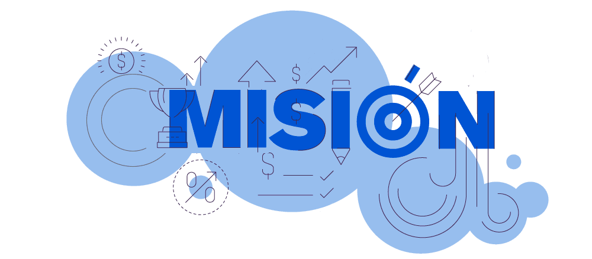

La mision de Mundo Reciclaje es recolectar, comprar y reprocesar el reciclaje,
alargando asi la vida util de los materiales usados, y a su vez contribuyendo a
una mas amplia preservacion del medio ambiente.